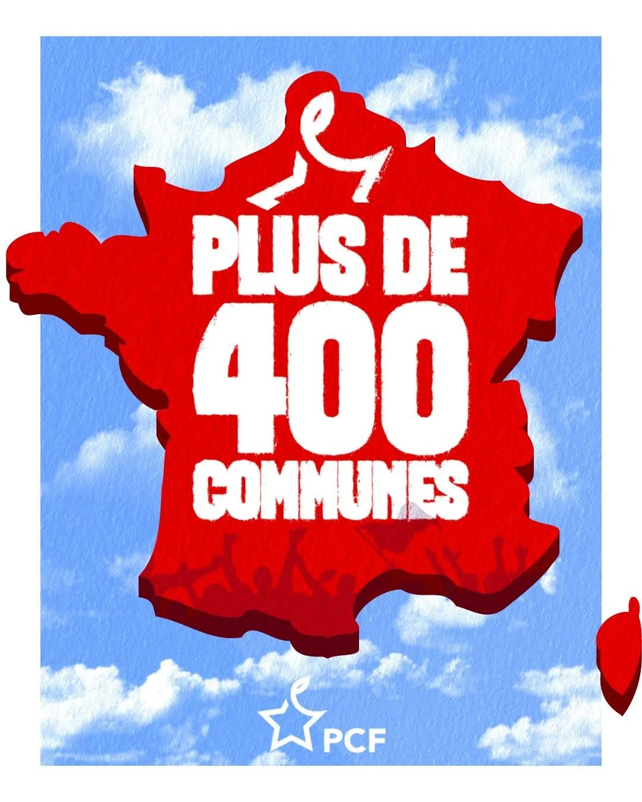

Publication relayée par le PCF 79
Le PCF présente son bilan des élections municipales
Date de mise à jour indiquée par Facebook · 30 mars 2026
Texte de la publication · PCF national
🔴 Plus de 400 communes dirigées par un·e maire communiste !
Des milliers de nos camarades, femmes et d'hommes, présents dans les conseils municipaux au sein de majorités de large rassemblement ou dans l'opposition.
🇫🇷 En responsabilité partout au service de l'intérêt général, pour défendre les services locaux et une certaine conception de la commune et des politiques publiques utiles, concrètes et solidaires au plus près des habitant·es.
🚩 A l'issue de ces élections, le PCF reste la deuxième force politique à gauche du pays en nombre d'élus !
Un atout pour construire l'avenir et protéger nos concitoyens !

Sources
PCF national · publication relayée par le PCF 79 · bibliothèque Facebook · AR-0002-FB-00830
À lire aussi · Après les municipales, le PCF appelle à amplifier la mobilisation